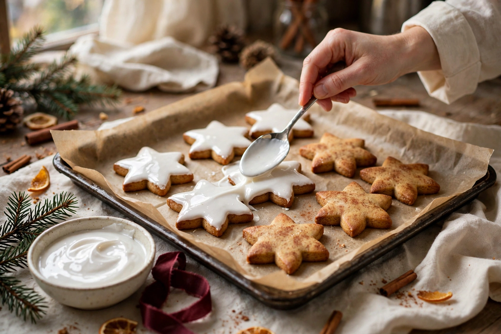

Make Your Own Zimtsterne (Cinnamon Stars)
Cinnamon stars are the jewel of every German Christmas cookie tin: a chewy almond heart, warm cinnamon, and a snow-white meringue glaze. They bake at a low temperature so the glaze stays perfectly white.

Contents
Ingredients
Instructions
- Beat the egg whites with the salt until stiff. Gradually beat in the confectioners' sugar until you have a glossy meringue. Set aside 4 tablespoons for the glaze.
- Fold the cinnamon and almonds into the remaining meringue to form a sticky dough. Chill for 30 minutes.
- Roll out the dough between two sheets of parchment to about ½ inch (1 cm) thick. Cut out stars, dipping the cutter in water in between.
- Place the stars on a baking sheet and brush thinly with the reserved meringue glaze.
- Bake at 275°F (140°C) for 12–15 minutes – the glaze must stay white and the center chewy.

Tip
Do not overbake: cinnamon stars are done when the underside is still soft. They firm up as they cool and stay beautifully chewy.
📌 Find more cookie ideas on our Pinterest profile:
Cookie Recipes on Pinterest
Cookie Recipes on Pinterest